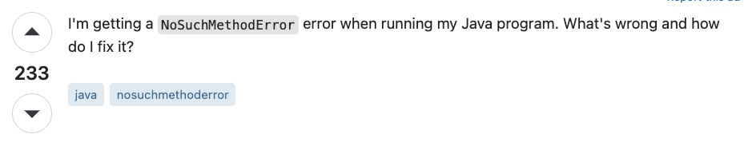

With the increasing complexities of the modern world and technologies, it is more important than ever to ask smart descriptive questions when reaching out for support. Whether online or in person, it is important to make sure the questions you ask help both you and a possible respondent to reduce the time getting help and improve the overall experience. Today, we will look at two StackOverflow questions. One which is formulated to be a smart question, and the other which is not so much. I will be using the article “How To Ask Questions The Smart Way” by Eric Steven Raymond as a reference for what is a good question. The goal is to help us better understand what constitutes a smart question, enabling us to write and ask more effectively.

To start, the question with the following title was posted to StackOverflow:
“How do I fix a NoSuchMethodError?”.
In this first question, there was no further context or description. Nor were there any links provided to view the code. This question was regarded with three mistakes outlined by Eric Steven Raymond. First, the poster of the question could have started by looking at similar questions with the tag NoSuchMethodError on StackOverflow. Considering that the question was posted in 2022, it is likely that there were already hundreds, if not thousands, of similar questions with answers. Second, the question provides little context for someone to answer. Because of this, they would need to take guesses as to possible issues. We see this within the responses as the top answer states, “Without any more information, it is difficult to pinpoint the problem.” To add to this, there was no source code or error code provided, just the name of the error. So there is no way of telling when or where it happened. Finally, the user did not provide any details about how they tried to fix the error. These combined resulted in a lackluster answer section, with multiple completely different possible solutions being brought up. From issues with actual code to issues with the .jar file and issues with imported packages.
Now I would like to offer a smart question, at least checking off some points made in the article by Eric Steven Raymond. While this is not a perfect smart question, it demonstrates that having a few qualities of a smart question can improve the overall experience. The following question was posted with the title:
“ReferenceError getValuesOfAutofillInputs, Can’t find variable: PaymentAutofillConfig.”
The poster of the second question follows a few important rules for a smart question. First, their description is very descriptive. The description offers context for when they are being faced with the error, saying, “We are facing the Reference error in our code since 2nd of June.” They are also offering details as to where the error is appearing, saying, “Only on IOS devices.” Next, they provide a link to the error to be viewed. Proceeding, the developer offers more context such as the frameworks they are using, their understanding of the error, and a call to action asking for help. Together, these qualities of the question make it a much stronger smart question, allowing for people to help with needed context. In the answers section, we can see while nobody has found a solution so far, there is thoughtful discussion of other developers facing the issue, stating “Same here, with Instagram,” etc.
To conclude what was discussed, I would like to note that while asking smart questions may not always get you answers, it will most definitely help find answers faster when there are good solutions available. Due to the abstract nature of computer science and the vast variety of domains, it is important to remain professional. Provide context and all the details you have when asking questions, so other developers can help you and make it pain-free on their end. I hope you enjoyed my thoughts on smart questions and remember to ask the question “Is my question a smart question?”